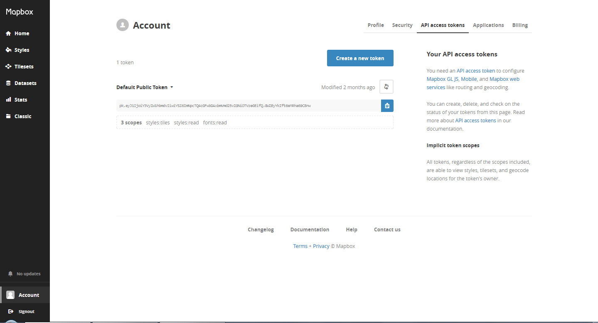

If you want to see how the different maps look like, click here and then click on the map ids (e.g., mapbox.streets) to see their examples.
Sign up for an account on Mapbox, then go to your Account page > API access tokens > Default Public Token (see image below).
